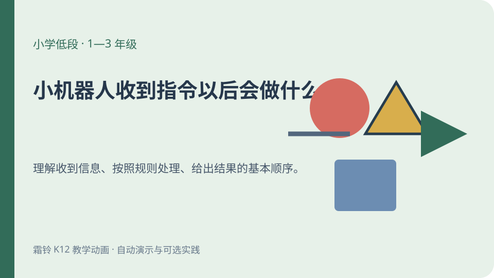
小机器人收到指令以后会做什么
小学低段 · 1—3 年级
理解收到信息、按照规则处理、给出结果的基本顺序。
知识点：输入、处理、输出
打开课件四档学段共 12 个离线课件。打开任一课件后点一次“开始播放”，即可观看连续演示和字幕朗读；没有普通话声音时按字幕时间无声继续。每个课件下方都提供独立的可选实践。

小学低段 · 1—3 年级
理解收到信息、按照规则处理、给出结果的基本顺序。
知识点：输入、处理、输出
打开课件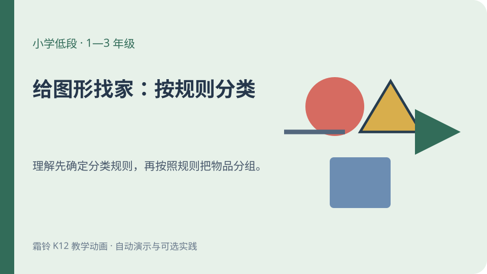
小学低段 · 1—3 年级
理解先确定分类规则，再按照规则把物品分组。
知识点：分类规则、形状、颜色
打开课件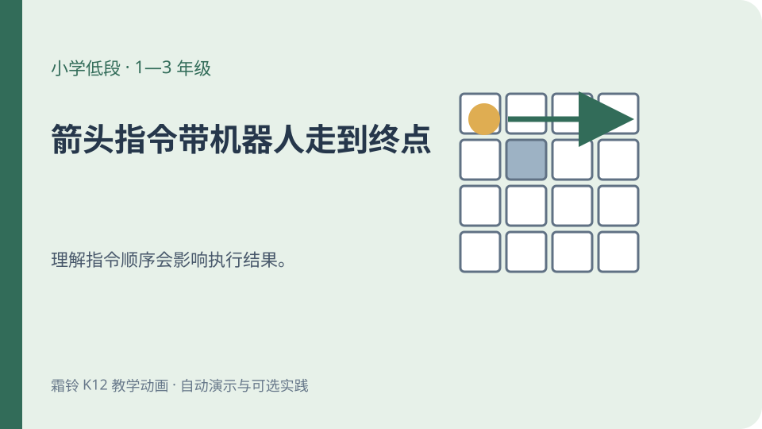
小学低段 · 1—3 年级
理解指令顺序会影响执行结果。
知识点：指令顺序、方向、障碍
打开课件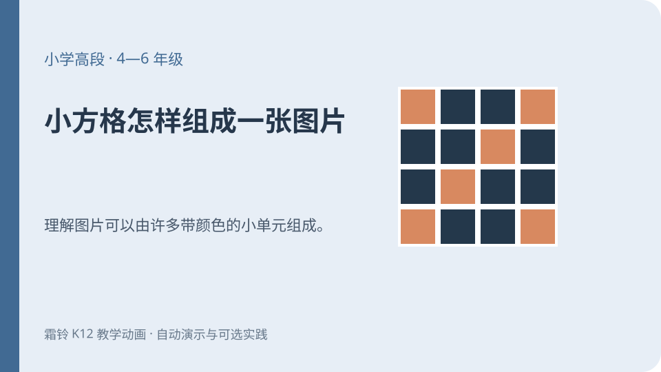
小学高段 · 4—6 年级
理解图片可以由许多带颜色的小单元组成。
知识点：像素、颜色矩阵、图像细节
打开课件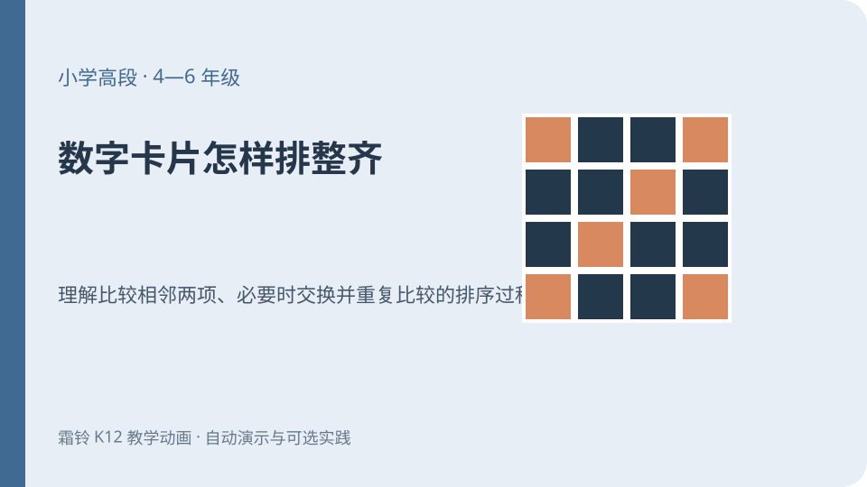
小学高段 · 4—6 年级
理解比较相邻两项、必要时交换并重复比较的排序过程。
知识点：相邻比较、交换、冒泡排序
打开课件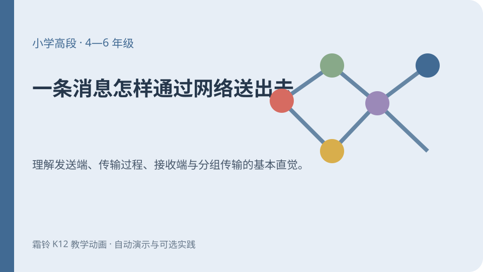
小学高段 · 4—6 年级
理解发送端、传输过程、接收端与分组传输的基本直觉。
知识点：发送与接收、信息块、编号重组
打开课件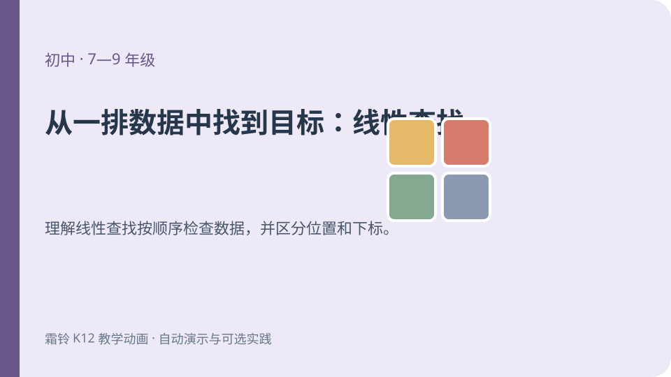
初中 · 7—9 年级
理解线性查找按顺序检查数据，并区分位置和下标。
知识点：线性查找、数组下标、停止条件
打开课件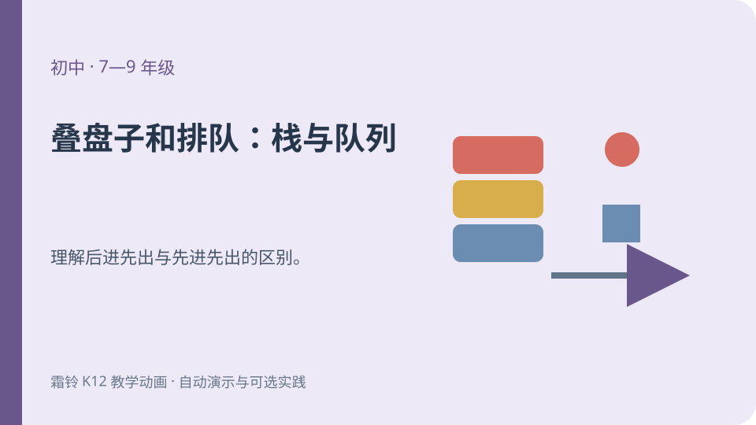
初中 · 7—9 年级
理解后进先出与先进先出的区别。
知识点：栈、队列、先进先出、后进先出
打开课件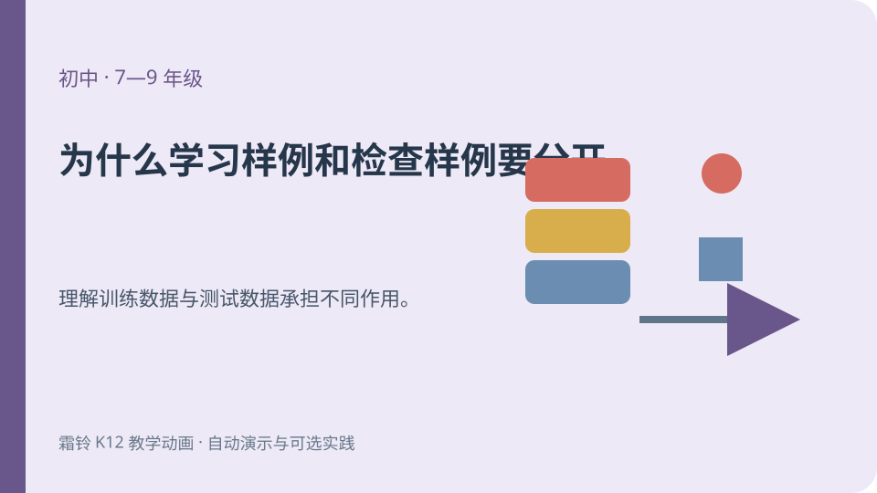
初中 · 7—9 年级
理解训练数据与测试数据承担不同作用。
知识点：训练数据、测试数据、最近邻、评估
打开课件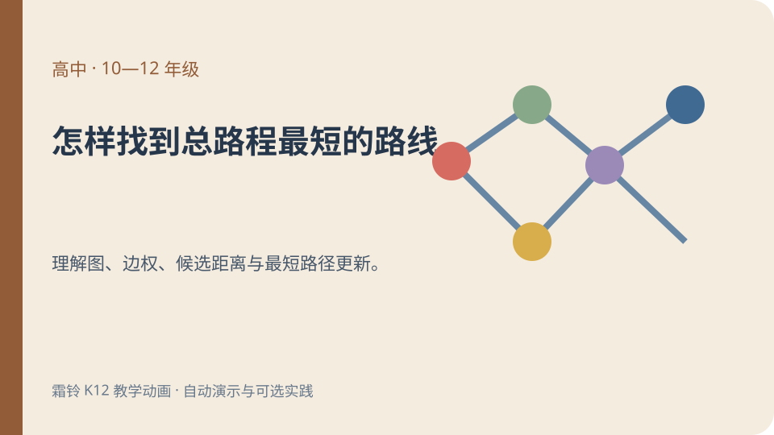
高中 · 10—12 年级
理解图、边权、候选距离与最短路径更新。
知识点：带权图、Dijkstra 算法、候选距离、前驱
打开课件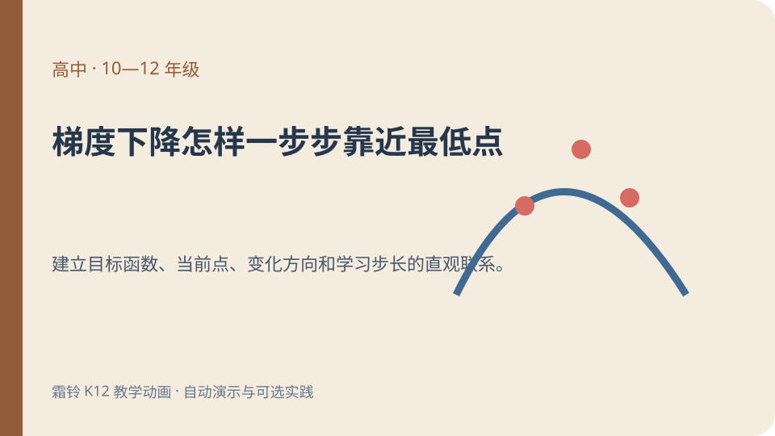
高中 · 10—12 年级
建立目标函数、当前点、变化方向和学习步长的直观联系。
知识点：目标函数、导数方向、学习步长、梯度下降
打开课件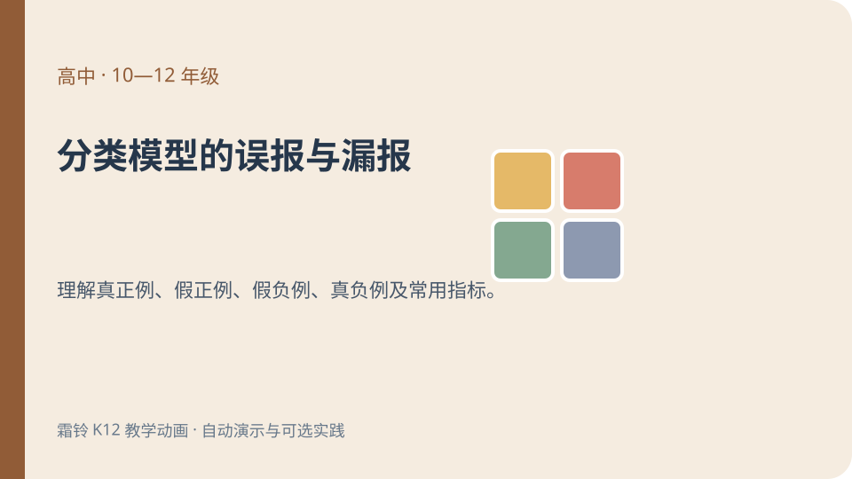
高中 · 10—12 年级
理解真正例、假正例、假负例、真负例及常用指标。
知识点：混淆矩阵、准确率、精确率、召回率、阈值
打开课件